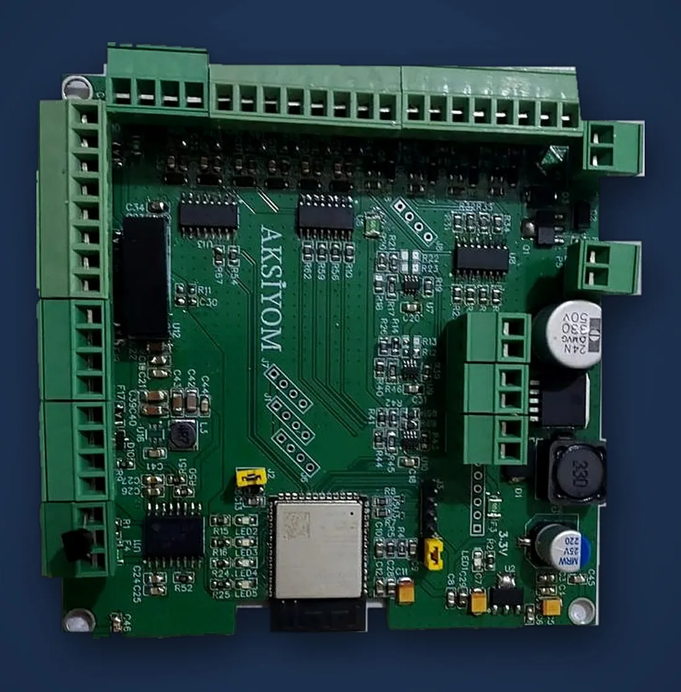
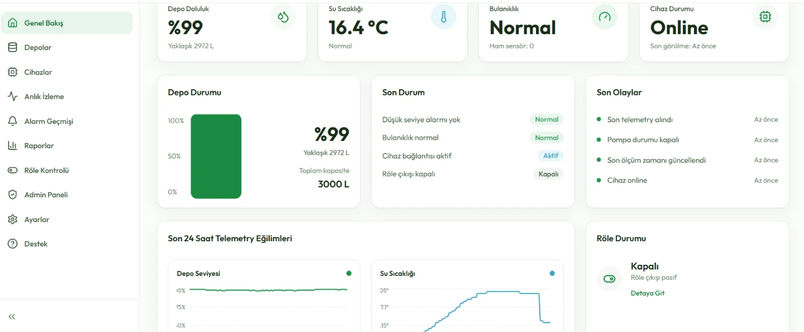
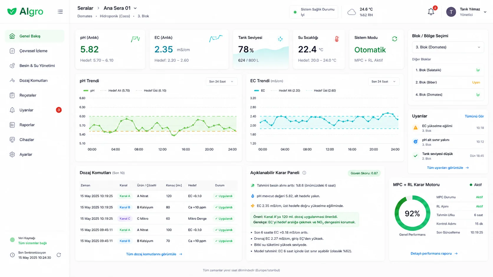
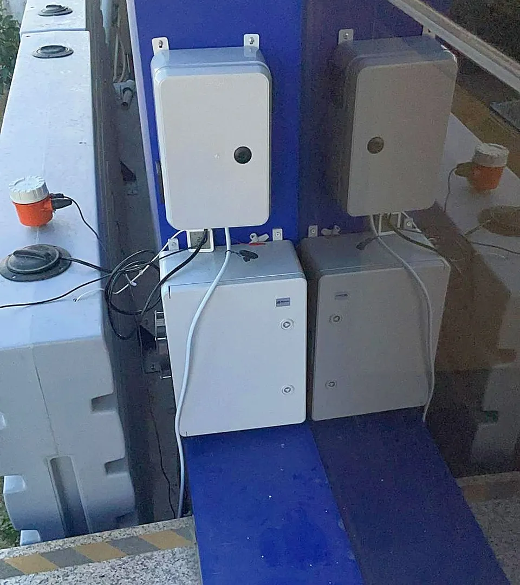
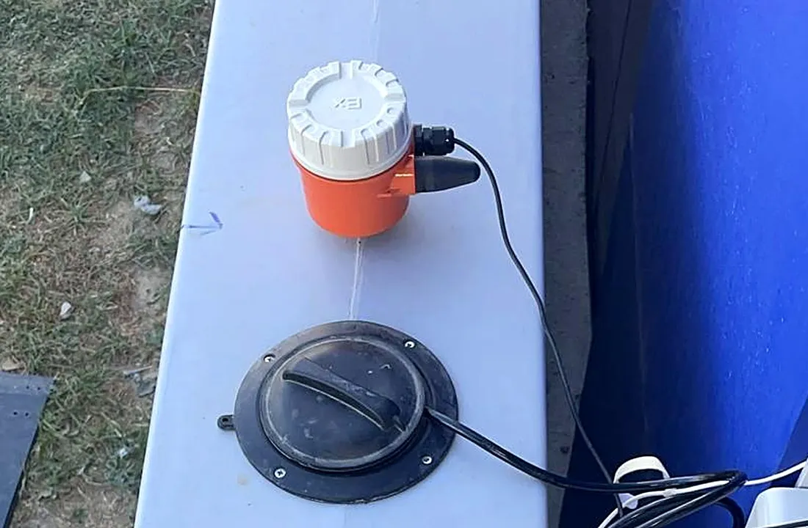

AI-powered soilless farming
Every drop, every dose, driven by AI.
AIgro uses AI to run nutrient dosing, water monitoring and vertical farming on one platform. It measures, forecasts and acts safely.
- AI-driven dosingPatent application filed
- End-to-end systemOne team, sensor to dashboard
- 3-channel dosingNutrient A · Nutrient B · pH
- Wi-Fi or 4GSIM data where there is no internet
Technology
AI decides, the control layer applies it safely.
AI sits at the core of AIgro: it determines the optimal dose from sensor data, and the controller board applies that decision within safety limits.
- Sensor data
- AI decision
- Safety check
- Safe dose
-
Patent application
AI-powered automatic dosing
For soilless farming systems
-
Utility model application
Modular water monitoring and management system
Installed on existing tanks without permanent modification
Our solutions
Three solutions, one platform
The same controller board and the same dashboard, from the field water tank to the greenhouse nutrient tank and the café growing module.

Smart Nutrient Dosing
Forecasts pH and EC in soilless greenhouses and safely applies the smallest effective dose.
- Predictive, explainable dosing decisions
- Independent safety layer on the board
- Keeps working locally if the internet drops

Water Monitoring System
Monitors tank water remotely, warns you before problems grow and controls the pump remotely.
- Fill level (% and litres), temperature, turbidity
- Low-level and connection alarms
- Remote pump control via relay

Vertical Farming Module
A premium growing module for cafés and restaurants. Grown here, served here.
- Two-tier NFT channels with grow LEDs
- 25 L tank and circulation pump
- Built on the AIgro board and dashboard
Why AIgro
Fixed-threshold dosing is always one step behind.
With manual or fixed-threshold dosing, action comes only after the problem appears. Fertiliser and water are wasted and roots get stressed. AIgro sees the trend coming and holds the target band with minimal intervention.
Today
- Action only after values leave the band
- Manual readings and estimated doses
- No record of why a dose was given
- Empty tanks are noticed too late
With AIgro
- pH/EC trends are forecast in advance
- Minimal dose, within safety limits
- Every dose logged with its reason
- Alarms before the level drops
Platform
We build every layer, from sensor to dashboard
Board, embedded software, cloud dashboard and installation from one team. One point of contact, fast adaptation.
Sensors
Level, temperature, turbidity; pH and EC for dosing
Controller board
Our own design; measures, checks, controls
Connectivity
To the cloud over Wi-Fi or SIM-based 4G
Web dashboard
Live monitoring, alarms, reports, remote control
Pumps and dosing
Remote, or autonomous within safety limits

Shared hardware
One board powers two products
It reads the sensors, drives the pump and sends data to the cloud. It manages tank and pump for water monitoring, and three dosing pumps within safety limits for dosing.
- For water monitoringLevel, temperature and turbidity readings, relay-based pump control.
- Safety layer for dosingEvery AI command is checked against limits on the board.
- Wi-Fi or 4GConnects over SIM mobile data where there is no internet.
- Over-the-air updatesNo site visit needed for software updates.
Web dashboard
Run the site from your office
From tank fill level to the reason behind each dose, everything on one screen. Monitor and act without returning to the site after installation.

Tank, temperature and alarms on one screen
- Live fill levelIn percent and litres, with total capacity
- Recent events and alarm historyLow level, turbidity, connection
- Relay controlSwitch the pump on and off from the dashboard

Every dosing decision, with its reason
- Live pH / ECWith target band and trend
- Dosing logEvery command, channel and amount
- Decision rationaleWhy this dose was given, in plain language
Values in the screenshot are examples.
Our targets
Higher yield with less water and fertiliser
- 25–35%less water
- 20–30%less fertiliser
- 50%+less manual intervention
- 15–25%higher yield
These figures are literature-based targets, not guarantees. They are measured on your site and reported as they are.
Installations
Real tanks, real installations
The level sensor sits on top of the existing tank, the control cabinet on the wall next to it. After installation, everything is monitored from the dashboard.




About
One team, from sensor to AI
AIgro is a product family that brings electronics, embedded software, cloud and artificial intelligence under one roof, focused on soilless farming and water management.
- End-to-end teamElectronics, embedded software, cloud, AI and field installation
- Customer installationsThe water monitoring system runs on customer tanks
- Transparent measurementWe measure targets on site and report results as they are
Let's work together
Steps we can take with our partners
AIgro dosing in your greenhouse
Let's install AIgro nutrient dosing starting from one line and measure the results together.
Water monitoring installation
Let's install the water monitoring system on your tanks and follow it together on the dashboard.
Feedback
Tell us what is missing from a grower's point of view and we'll adapt the product to the field together.

Let us show you the live system.
In a short call we'll open the water monitoring dashboard live and choose the right line for dosing together.